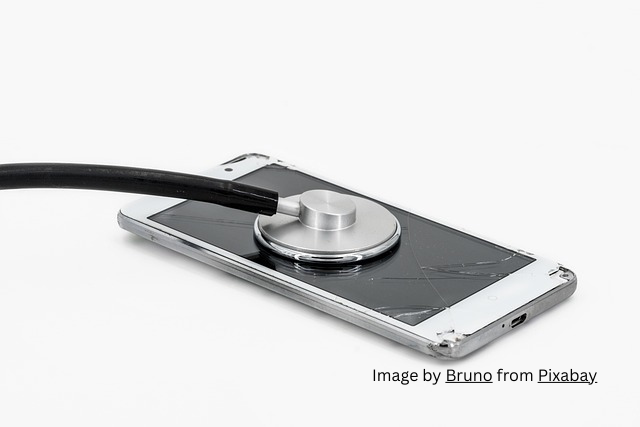

Why Google Business Profile Is Essential for Nashik Doctors

Nashik’s healthcare landscape is changing rapidly. Patients no longer flip through directories or rely only on word-of-mouth to find a clinic. They open Google on their phone, type “dentist near me” or “child specialist in Nashik,” and choose from the results they see first. In this new reality, a Google Business Profile (GBP) is not just another online form—it’s the digital heartbeat of a modern medical practice.
Your Clinic’s Online Identity
Google Business Profile acts as a public face of your clinic. It is the panel that appears on Google Search and Google Maps whenever someone looks for your name or services. Address, timings, phone number, photographs, reviews—all the basic details a patient needs to decide whether to visit you—are presented instantly. Without a profile, you are practically invisible even if you own a website.
Credibility Patients Can See
Healthcare decisions are built on trust. A complete GBP listing, with professional photos and up-to-date information, creates an immediate sense of legitimacy. Reviews from real patients provide social proof that no paid advertisement can match. For someone searching at 9 p.m. for a nearby clinic, a strong profile is often the difference between choosing you or scrolling past.
Local Reach Without Advertising Spend
Unlike traditional ads or paid search, GBP is free and designed to favor local results. Google highlights clinics that are accurately listed and actively maintained, placing them on the coveted Map Pack—the small box of top three results that most people click first. For a Nashik doctor, this is the most direct route to neighbourhood patients.
Real-Time Connection
Because patients can call, get directions, or read reviews directly from the profile, GBP acts as a 24/7 front desk. Changes to clinic hours, new services, or holiday closures can be updated instantly, ensuring that information remains correct even when staff are off duty.
Insight Into Your Community
Google also provides analytics showing how patients discover your clinic—what keywords they search, how many requested directions, and how many called you straight from the listing. These insights reveal the demand patterns of Nashik’s neighbourhoods, guiding decisions on services or marketing focus.
The Bottom Line
A Google Business Profile is not a technical extra. It is what allows Nashik patients to find you, trust you, and contact you at the exact moment they need care. For doctors and dentists competing in a fast-growing city, it is as essential as a clinic signboard—only this signboard lights up on every smartphone in town.
In today’s search-driven world, your next patient is already looking for you on Google. A complete and active Business Profile ensures that when they search, they find you first.